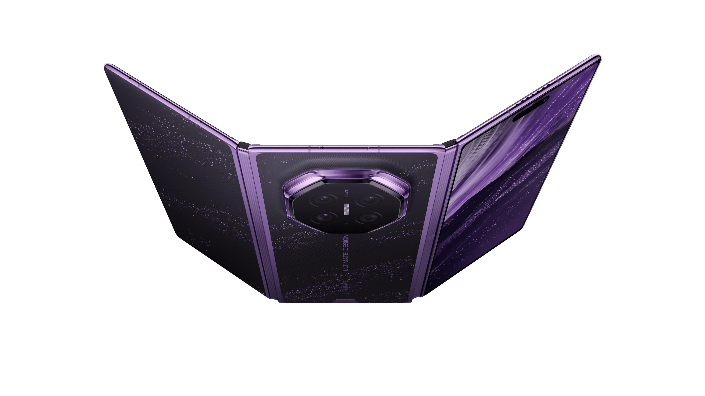

科技產品 T1

Mate XT 2 官方產品圖。 Huawei
華為發表三折疊 Mate XT 2，首搭 HarmonyOS 7 與麒麟 9050 Pro
發佈時間
華為｜HUAWEI Mate XT 2 非凡大師
這是三折疊手機把新處理器、隱私顯示與新系統綁成旗艦定位的正式上線，亦把端側 AI、耐用性與大螢幕多工推向同一產品線。
- 官方產品頁列出麒麟 9050 Pro、靈盾防窺屏及 HarmonyOS 7。
- 官方稱搭載 HarmonyOS 7 的 Mate XT 2 相較 Mate XTs 使用多層複合內屏、第二代天工鉸鏈與 IP58/IP59 防護。
- 華為也列出端側大模型、三窗並行與 AI 編創等功能，但部分功能標注須後續 HOTA 更新。
完整報告收合報告
事件背景與影響
這是三折疊手機把新處理器、隱私顯示與新系統綁成旗艦定位的正式上線，亦把端側 AI、耐用性與大螢幕多工推向同一產品線。
事件與發佈依據
華為官方支援頁明示 9 月 7 日 14:30 的 HarmonyOS 7 與 Mate XT 2 發表會；基準是公司正式公開新機及系統。
收錄紀錄
首次收錄。先以 Huawei、Mate XT 2、HarmonyOS 7、Kirin 9050 Pro 的窄式 rg 搜尋完整歷史產品表、日報與來源筆記，無同一產品變更命中；才完整讀取近 7 日產品表，仍無命中。
尚待確認
規格和效能比較主要是華為自家實驗室宣稱；區域上市、價格與部分功能的實際可用時程需以各市場零售與更新公告為準。
相關實體與概念
華為、Mate XT 2、HarmonyOS 7、Kirin 9050 Pro、三折疊、端側 AI、隱私顯示
科技產品 T2
Sony 將 WH-1000XM4 以 WH-1000XM4C 重新推出，定價 299.99 美元並開放預購
發佈時間
Sony｜WH-1000XM4C
Sony 選擇把經典降噪耳機改以較低價的新型號重返產品線，反映成熟音訊平台仍可藉軟體調音、顏色與通路重新定位。
- Sony 官方商城列 WH-1000XM4C 為 New Model，售價 299.99 美元、狀態為預購。
- 官方列出約 253g 重量、最長 27 小時播放、可折疊設計與 Sound Connect App 個人化設定。
- Engadget 補充它沿用 1000X 系列降噪定位並加入更新的聲音自訂功能；美國頁面列預估 9 月下旬交貨。
完整報告收合報告
事件背景與影響
Sony 選擇把經典降噪耳機改以較低價的新型號重返產品線，反映成熟音訊平台仍可藉軟體調音、顏色與通路重新定位。
事件與發佈依據
Engadget 於 9 月 7 日 12:00 EST 首次可靠發布；基準是 Sony 將新型號上架官方商城並開放預購。
收錄紀錄
首次收錄。先以 Sony、WH-1000XM4C、M4 2nd Gen、1000X 的窄式 rg 搜尋完整歷史產品表、日報與來源筆記，無同一產品變更命中；才完整讀取近 7 日產品表，仍無命中。
尚待確認
官方頁面是美國商城，價格、顏色與交期不代表其他市場；實際降噪與音質表現仍待零售機第三方測試。
相關實體與概念
Sony、WH-1000XM4C、1000X、active noise cancelling、Sound Connect、consumer audio
科技產品 T3
倫敦 Wayve 車輛，官方新聞稿配圖。 Uber / Wayve
Uber 與 Wayve 在倫敦上線英國首批可叫車的受監督自駕行程
發佈時間
Uber／Wayve｜Wayve AI Driver 乘車服務
這是英國首次讓一般叫車用戶接觸到自動駕駛行程的商業化節點，雖然仍有人類駕駛監督，已把端到端駕駛 AI 帶進受監管的公共服務。
- Uber 說倫敦 UberX、Uber Electric 或 Uber Comfort 用戶可在無加價下被配對到 Wayve 行程。
- 車輛是全電 Ford Mustang Mach-E，使用 Wayve AI Driver 與環繞感測器；乘客可在車到前改選非 AV 行程。
- 每趟仍有合格安全駕駛在座，並非無人駕駛服務。
完整報告收合報告
事件背景與影響
這是英國首次讓一般叫車用戶接觸到自動駕駛行程的商業化節點，雖然仍有人類駕駛監督，已把端到端駕駛 AI 帶進受監管的公共服務。
事件與發佈依據
Uber 與 Wayve 官方新聞稿於 9 月 3 日發布；基準是乘客可在 UberX、Uber Electric、Uber Comfort 內被配對到 Wayve 車輛。
收錄紀錄
首次收錄。先以 Uber、Wayve、London robotaxi、autonomous rides、Ford Mustang Mach-E 的窄式 rg 搜尋完整歷史產品表、日報與來源筆記，無同一商業服務上線命中；才完整讀取近 7 日產品表，仍無命中。
尚待確認
公開服務規模、配對機率與何時移除安全駕駛並未公布；「自動駕駛」不能解讀成英國已准許無人監督營運。
相關實體與概念
Uber、Wayve、London、robotaxi、Wayve AI Driver、Ford Mustang Mach-E、autonomous mobility
全球焦點 1
 全球新聞主題配圖，並非本次事件照片。 Unsplash
全球新聞主題配圖，並非本次事件照片。 Unsplash
續報｜伊朗稱改良彈道飛彈體現「先發制人」新準則
發佈時間
從海域管制構想延伸到公開先制論述與飛彈能力展示，會提高 Hormuz 航運、能源市場及誤判升級的風險。
- 伊朗媒體稱 Qassem Basir 顯示將在威脅實現前採取行動。
- AP 指伊朗對飛彈是否曾測試攻擊美軍艦的說法無法釐清。
- 美方此前稱遭彈道飛彈攻擊後打擊三艘伊朗油輪，攻擊說法與事實仍有爭議。
完整報告收合報告
事件背景與影響
從海域管制構想延伸到公開先制論述與飛彈能力展示，會提高 Hormuz 航運、能源市場及誤判升級的風險。
事件與發佈依據
AP 首次可靠發布於 2026-09-07T21:24:47Z；基準是伊朗國營媒體把 Qassem Basir 固體燃料飛彈與先發行動準則公開連結。
收錄紀錄
續報，前次收錄日期：2026-09-07（Hormuz 附近排除區規畫）。本日新增是伊朗公開宣示可在威脅實現前採取行動，並把此說法連結到改良飛彈與對美艦測試的主張。
尚待確認
飛彈測試細節、實際能力與事件因果主要來自交戰方敘事，尚無完整獨立核實。
相關實體與概念
伊朗、美國、Qassem Basir、Hormuz、彈道飛彈、海上安全
全球焦點 2
IAEA 稱 Assad 時期敘利亞反應爐設計可產生核武所需裂變材料
發佈時間
核監督機構把已遭攻擊的舊設施明確連到可能武器用裂變材料，增加後 Assad 時期核查、材料盤點和區域防擴散議題的重要性。
- Grossi 說該反應爐的配置與技術特徵可高效率產製能直接用於製作核武的裂變材料。
- 敘利亞過去從未申報並曾否認相關意圖。
- 報導指設施位於 Deir el-Zour、由北韓協助建造，並在 2007 年遭以色列摧毀。
完整報告收合報告
事件背景與影響
核監督機構把已遭攻擊的舊設施明確連到可能武器用裂變材料，增加後 Assad 時期核查、材料盤點和區域防擴散議題的重要性。
事件與發佈依據
AP 首次可靠發布於 2026-09-07T14:52:42Z；基準是 IAEA 總署 Rafael Grossi 在理事會首日公開說明該設施技術配置。
收錄紀錄
首次收錄。以 Syrian reactor、IAEA Grossi、Deir el-Zour、fissile material 的窄式 rg 搜尋既有日報與來源筆記，無同一新說明。
尚待確認
技術配置可構成嚴重疑慮，但無法單由此判定當時政治意圖；存量、後續材料與核查範圍仍未公開。
相關實體與概念
IAEA、Rafael Grossi、Syria、Deir el-Zour、nuclear safeguards、nonproliferation
全球焦點 3
北韓服役第二艘驅逐艦，美韓日啟動 Freedom Edge 演習
發佈時間
北韓海軍現代化與美韓日多域聯演在同一日出現，凸顯東北亞把海上作戰、核威懾與盟國互操作性同步升高。
- Kim Jong Un 在 Wonsan 為第二艘驅逐艦 Kang Kon 主持服役儀式。
- 美韓日展開為期五天的 Freedom Edge，南韓稱目的在提升應對北韓核威脅的聯合能力。
- 北韓防長隨後批評演習，並警告可能採取強烈反制。
完整報告收合報告
事件背景與影響
北韓海軍現代化與美韓日多域聯演在同一日出現，凸顯東北亞把海上作戰、核威懾與盟國互操作性同步升高。
事件與發佈依據
AP 首次可靠發布於 2026-09-07T00:40:09Z；基準是北韓媒體報導 Kang Kon 驅逐艦服役，同日三國五天聯演開幕。
收錄紀錄
首次收錄。以 Kang Kon、Freedom Edge、North Korea second destroyer 的窄式 rg 搜尋既有日報與來源筆記，無同一節點。
尚待確認
北韓艦艇武器與雷達實際能力外界難以驗證；三方演習雖稱防禦性，北韓的風險判讀相反。
相關實體與概念
North Korea、Kim Jong Un、Kang Kon、Freedom Edge、United States、South Korea、Japan
全球焦點 4
續報｜以色列在南黎巴嫩空襲至少造成 12 死亡，停火框架再受壓
發佈時間
連續兩日致命空襲不只更新傷亡，亦直接挑戰停火安排能否壓住以色列與 Hezbollah 間的跨境升級。
- 報導稱空襲從清晨開始，Kfar Roummane 的救援現場使用挖掘機搜尋。
- 醫療與地方通報稱至少 12 人死亡。
- 黎巴嫩總統指控此輪升級意在破壞停火框架；交戰各方對目標與觸發原因有不同主張。
完整報告收合報告
事件背景與影響
連續兩日致命空襲不只更新傷亡，亦直接挑戰停火安排能否壓住以色列與 Hezbollah 間的跨境升級。
事件與發佈依據
Al Jazeera 於 9 月 7 日報導；基準是 Kfar Roummane 等地空襲後的死亡與救援通報。
收錄紀錄
續報，前次收錄日期：2026-09-07（先前南黎巴嫩空襲至少 7 死）。本日新增是另一波攻擊、死亡至少升至 12 的通報，以及黎巴嫩總統稱其意在削弱美國支持的停火架構。
尚待確認
傷亡、目標性質與責任歸屬多來自交戰方或地方機構，尚未有完整獨立驗證。
相關實體與概念
Israel、Lebanon、Hezbollah、Kfar Roummane、ceasefire、airstrike
全球焦點 5
新德里學生宿舍樓倒塌，至少 7 人死亡
發佈時間
首都大學區住宅倒塌造成死亡並牽出建築安全、地方執照執行與緊急救援能力問題。
- 倒塌建物鄰近 Delhi University、主要住有學生。
- AP 報導死亡至少 7 人，救援人員以重機具與搜救犬在瓦礫中尋人。
- 地方政府暫停 5 名市政雇員職務，周邊建物也一度疏散。
完整報告收合報告
事件背景與影響
首都大學區住宅倒塌造成死亡並牽出建築安全、地方執照執行與緊急救援能力問題。
事件與發佈依據
AP 首次可靠發布於 2026-09-07T05:44:48Z；基準是 Satya Niketan 多層建築倒塌後的搜救及院方通報。
收錄紀錄
首次收錄。以 Satya Niketan、Delhi building collapse、student hostel 的窄式 rg 搜尋既有日報與來源筆記，無同一事故。
尚待確認
受困人數、最終死亡數和倒塌原因仍在調查；早期通報可能隨搜救進展修正。
相關實體與概念
India、New Delhi、Satya Niketan、Delhi University、building safety、disaster response
全球焦點 6
續報｜AfD 在 Saxony-Anhalt 州選後成第一大黨，Merz 稱結果不能忽視
發佈時間
由出口民調變成聯邦層級回應，代表一州選舉已成德國各黨如何維持不合作防線與調整選戰策略的實質考驗。
- Guardian 報導 AfD 在 Saxony-Anhalt 勝選、但未達過半。
- Merz 稱這項結果令人震驚且不能簡單略過。
- AfD 得票優勢仍不直接等於能組閣，因其他政黨能否維持不合作立場是關鍵。
完整報告收合報告
事件背景與影響
由出口民調變成聯邦層級回應，代表一州選舉已成德國各黨如何維持不合作防線與調整選戰策略的實質考驗。
事件與發佈依據
Guardian 於 9 月 7 日 06:49 EDT 首次可靠發布選後反應；基準是選舉結果後 AfD 勝選與聯邦總理 Merz 的公開回應。
收錄紀錄
續報，前次收錄日期：2026-09-07（出口民調顯示 AfD 領先）。本日新增是選後結果已成政治討論焦點、Merz 公開稱這是不能略過的結果，及其他政黨對歐洲極右風險的反應。
尚待確認
具體席次與組閣走向須以正式結果及政黨談判為準；評論性政治判斷不等於已發生的執政改變。
相關實體與概念
Germany、AfD、Saxony-Anhalt、Friedrich Merz、far right、coalition politics
全球焦點 7
俄羅斯與北韓啟用首條公路跨境橋梁，擴大雙邊物流連接
發佈時間
在北韓向俄羅斯提供彈藥與人員支援烏戰的背景下，固定公路通道使兩國的貿易、科技與可能的軍民物流合作更具延展性。
- 橋梁跨越圖們江、長約 1 公里、雙向兩線。
- 俄方稱新關卡每日可通行最多 300 輛車。
- 兩國原有鐵路橋與航空連結，2024 年同意建公路橋、去年開工。
完整報告收合報告
事件背景與影響
在北韓向俄羅斯提供彈藥與人員支援烏戰的背景下，固定公路通道使兩國的貿易、科技與可能的軍民物流合作更具延展性。
事件與發佈依據
AP 首次可靠發布於 2026-09-07T13:36:24Z；基準是圖們江公路橋啟用儀式與俄方政府聲明。
收錄紀錄
首次收錄。以 Tumen River bridge、Russia North Korea road link、Khasan Tumangang 的窄式 rg 搜尋既有日報與來源筆記，無同一橋梁啟用。
尚待確認
每日通行量是俄方規畫而非已驗證運量；橋梁對軍事物流的實際用途未由公開資料直接證明。
相關實體與概念
Russia、North Korea、Tumen River、border bridge、logistics、Ukraine war
全球焦點 8
WMO 新報告警告熱浪與野火污染可能抵銷空氣品質改善
發佈時間
這是把氣候極端與健康風險連到同一監測議程的全球機構更新，直接影響污染風險模型是否能處理野火煙霧的毒性與跨境輸送。
- WMO 說野火與熱浪造成的污染增加，可能削弱改善空品與保護健康、生態的國際努力。
- 新版公報彙集科學社群對空品與氣候關聯的文章。
- WMO 指現行空品風險評估常未充分捕捉野火煙霧毒性上升。
完整報告收合報告
事件背景與影響
這是把氣候極端與健康風險連到同一監測議程的全球機構更新，直接影響污染風險模型是否能處理野火煙霧的毒性與跨境輸送。
事件與發佈依據
WMO 於 9 月 7 日為 International Day of Clean Air for blue skies 發布公報；基準是新版 Air Quality and Climate Bulletin 公開。
收錄紀錄
首次收錄。以 WMO air quality climate bulletin、wildfire smoke、September 7 2026 的窄式 rg 搜尋既有日報與來源筆記，無同一新版公報。
尚待確認
公報是綜整性科學政策訊息，不是對單一城市的即時污染警報；各地健康風險仍需當地監測與衛生單位判讀。
相關實體與概念
WMO、air quality、wildfire smoke、heatwave、climate risk、public health
全球焦點 9
法國農業部預估葡萄酒產量跌至 30 年低點附近
發佈時間
法國是重要葡萄酒產國，熱浪與乾旱將氣候風險轉為農業供給、品質與出口產業的可量化壓力。
- 初估產量略低於 3,400 萬公石，較前年少 6%。
- 這也比 2021 至 2025 平均少 17%。
- Agreste 指縮減的葡萄園面積有影響，但主因是熱浪造成日灼、落葉與葡萄萎凋。
完整報告收合報告
事件背景與影響
法國是重要葡萄酒產國，熱浪與乾旱將氣候風險轉為農業供給、品質與出口產業的可量化壓力。
事件與發佈依據
Guardian 於 9 月 7 日 11:10 EDT 首次可靠發布農業部初估；基準是 2026 年法國葡萄酒收成預測公布。
收錄紀錄
首次收錄。以 France wine harvest、34m hectolitres、drought heat、30-year low 的窄式 rg 搜尋既有日報與來源筆記，無同一 2026 初估。
尚待確認
收成仍在進行，產量和品質預測可能調整；部分酒農認為現在判讀仍過早，野火煙味風險亦尚待檢驗。
相關實體與概念
France、wine、Agreste、drought、heatwave、agriculture、climate change
全球焦點 10
Jaguar Land Rover 宣布兩年內裁減 4,000 職位，以因應電動化競爭與成本
發佈時間
英國最大車廠以縮編回應中國電動車競爭，顯示傳統高端車製造商的轉型壓力正落到全球勞動力與資本配置。
- JLR 表示兩年內裁減 4,000 個全球職位。
- 公司目標節省 17 億英鎊，約 23 億美元。
- AP 報導公司把目標連到提升電動化轉型下的競爭力，並面對中國電動車業者壓力。
完整報告收合報告
事件背景與影響
英國最大車廠以縮編回應中國電動車競爭，顯示傳統高端車製造商的轉型壓力正落到全球勞動力與資本配置。
事件與發佈依據
AP 首次可靠發布於 2026-09-07T13:02:39Z；基準是 Jaguar Land Rover 公開全球裁員及成本節省計畫。
收錄紀錄
首次收錄。以 Jaguar Land Rover、JLR 4000 jobs、1.7bn savings 的窄式 rg 搜尋既有日報與來源筆記，無同一裁員計畫。
尚待確認
職位分布、職務類型、執行順序和最終節省額尚未完整公開；裁員計畫的社會與產業影響仍待後續協商。
相關實體與概念
Jaguar Land Rover、electric vehicles、China、automotive jobs、industrial transition
研究備註
時間、來源與後續追蹤
研究截點 2026-09-08 08:00:37（Asia/Taipei）
研究時間與範圍
研究截點：2026-09-08 08:00:37（Asia/Taipei）。全球新聞：2026-09-07 08:00:37 至 2026-09-08 08:00:37（Asia/Taipei；UTC：2026-09-07T00:00:37Z 至 2026-09-08T00:00:37Z）。科技產品：2026-09-01 08:00:37 至 2026-09-08 08:00:37（Asia/Taipei；UTC：2026-09-01T00:00:37Z 至 2026-09-08T00:00:37Z）。
後續追蹤 1
伊朗與南黎巴嫩：以獨立海事、傷亡與外交來源補強交戰方主張；任何行動邊界或停火文本須以正式公告為準。
後續追蹤 2
敘利亞與北韓：觀察 IAEA 理事會是否公布核查後續及北韓海軍、Freedom Edge 是否出現可驗證升級。
後續追蹤 3
AfD：確認正式席次、政黨協商與不合作防線是否維持。
後續追蹤 4
產品：確認 Mate XT 2 的地區售價與供貨、WH-1000XM4C 的零售測試，以及倫敦 Wayve 車隊的可及範圍與安全監督安排。